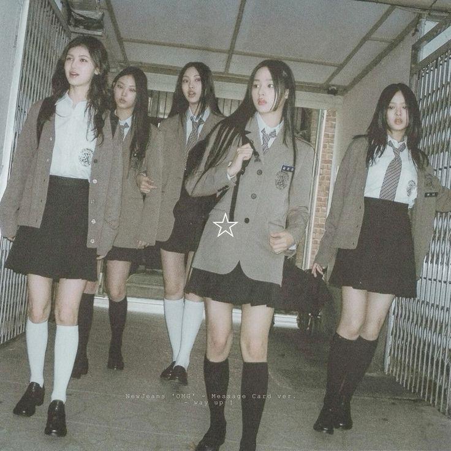

These are my favorite Musicians
I like her voice and i like how she makes her own music. Her music gives a calm and peaceful impression. I want to go to her concert someday, i wish.
Favorite Title: Promise, Letter To My 13 Year Old Self, Falling Behind

NewJeans
I love how they represent the teenager vibes on their songs. Because i also a teenager and i can relate to some of their songs. It gives me “This song is talking about me” vibes.
Favorite Title: Ditto, OMG, How Sweet, Cookie

Fujii Kaze
My first impression when i listen to his song is i love his vocal. I like how he plays piano on his live performances. His goofy persona make me more curious about him.
Favorite Title: Kaerou, Kirari, Matsuri